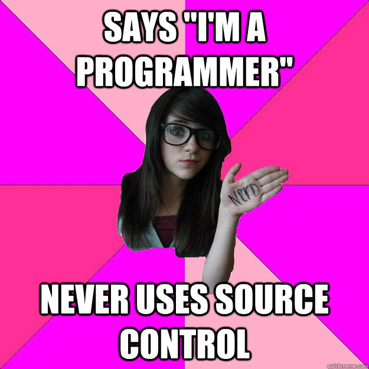
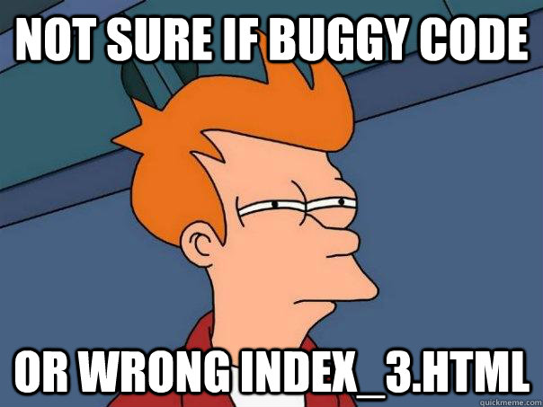
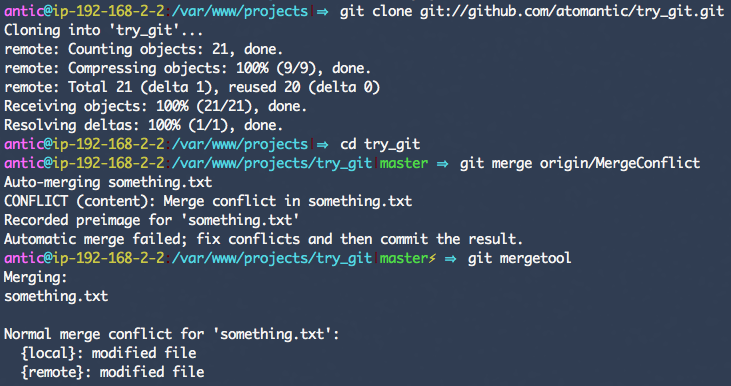
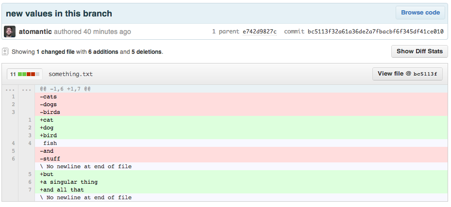
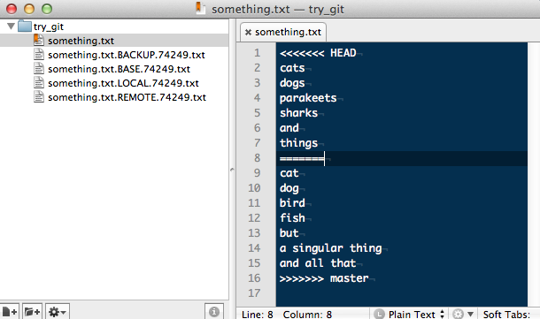
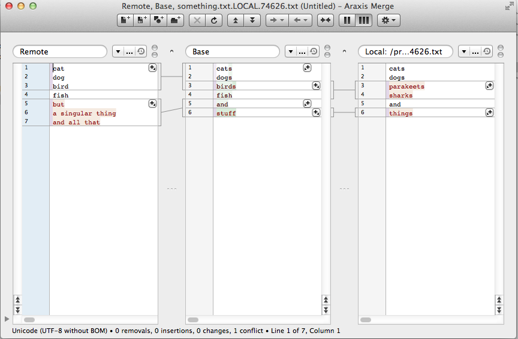
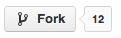
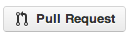

\[._.]/ - Oh, Hi!
I'm Adam Eivy (@antic)
Solutions Engineering Architect, Disney
Occasional Web Development Instructor, SCCC
Let's talk about Version Control Systems (VCS)...
This is complicated...
Step 1: Melt Your Brains (Overview)
Step 2: Try Some Hands On Git
Step 3: Push You Out of the Nest
Why?
- Centralizing code / Backup
- Collaboration
- Maintain history and versions
- Branching
Centralizing Code
- Network Share (been there)
- DropBox, etc (done that)
- Web Server (yep)
- Remote Code Repository
- Subversion (SVN)
- Mercurial (Hg)
- Git
Collaboration
It isn't always easy.
- Change conflicts
- Accountability ( blame / kudos )
History
Looking up code history can answer a lot of questions about how code got where it is:
- Who? Commit Author
- What? File Diffs
- When? Each commit is timestamped
- Why? Commit Messages
Branching
A little later, we'll go over Git Flow to see how this works
- Features (specific stories)
- Releases (versions)
- Hotfixes (bugs to production)
- Development
- External Teams
Methods
some flawed attempts*
- File Renaming
- Dreamweaver Check-in/out
Some actual versioning tools*
- Subversion
- Git
File Renaming
(index.html, index_2.html, index_3.html, index_adam_2.html)
- Doesn't require any software...but
- Tedious 句_句
- Explodes size of codebase
- Editing vs debugging version confusion
- Still causes conflicts with multiple devs


Dreamweaver
- Prevents conflicts by locking files
- Tedious
- Only one editor at a time
- If you forget to check in your file, nobody else can work on it
- No history/versioning/backup/etc
ಠ_ಠ

Subversion (SVN)
- Centralized remote repository
- Changes made on the remote server
- Single source of truth
- Branch merging is PAINFUL!


Git
- Entire repository is local
- Whole repo/history is smaller
- Branching is super easy
- It's social!

Process
- Check in frequently
- What's the diff?
- Code Review
- Fork and Pull Request
Check in frequently
- Commit locally
git commit -m 'added some stuff'
- Rebase to wrap-up changes
git rebase
- Push it out
git push
- Bask in awesomeness
\[._.]/
Merge Conflict!
Clean
Raw Merge
Araxis
Code Review
- Comment on checkins
- Line commenting
- Tag and add notes
- Kudos (^5)
Fork and Pull Request
If you do this, you rock!
- Fork a project on Github
 - Create a branch
git checkout -b FixingResponsiveLayout
- Fix a bug
git commit -m 'now the plugin handles responsive layout'; git push
- Submit a pull request

What now?


Command Line
- Learn it
- Use it
- <3 it
Free Ebook: Pro Git

http://git-scm.com/book/
Thanks!
Adam Eivy (@antic)
adam.eivy@disney.com
Solutions Engineering Architect
Disney Technology Solutions and Services